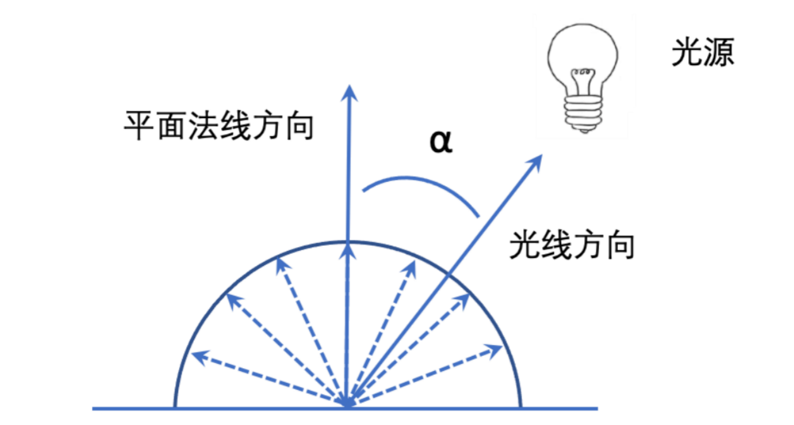

点光源光线：一个点向周围发出的光，如灯泡、火焰等.
定义⼀个点光源光需要光源的位置、光线方向以及颜⾊
根据照射点的位置不同，光线的⽅向也不同
平行光：可以看成是无限远处的光源发出的光，如太阳光
因为离光源的位置特别远，所以到达被照物体时可以认为光线是平行的
只需要光照方向和光照颜色
环境光：也就是间接光，是指光源发出后，经过其他物体各种发射，然后照到物体表面上的光线
环境光的强度差距非常小，没有必要精确计算光线强度
环境光是均匀照射到物体表⾯的，只需要定义光照颜色
环境反射：环境反射是针对环境光而言的，在环境反射中，环境光照射物体是各方面均匀、强度相等的，反射的方向就是入射光的反方向
最终物体的颜色只跟入射光颜色和基底色有关
<环境反射光颜色>=<入射光颜色>*<表面基底色>
漫反射中反射光的颜色除了取决于入射光的颜色、表面的基底色，还有入射光与物体表面的法向量形成的入射角
令入射角为 α，漫反射光的颜色可以根据下式计算
<漫反射光颜色>=<⼊射光颜色>*<表面基底色>* cosα
入射角 α 可以通过 光线方向和法线方向 的点积来计算：<光线方向>·<法线方向> = cosα
<漫反射光颜⾊>=<入射光颜色>*<表⾯基底色>* (<光线方向>*<法线方向>)
“光线方向”指的是⼊射方向的反方向，即从入射点指向光源方向
当漫反射和环境反射同时存在时，将两者加起来，就会得到物体最终被观察到的颜色：<表面的反射光颜色> = <漫反射光颜色>+<环境反射光颜色>
